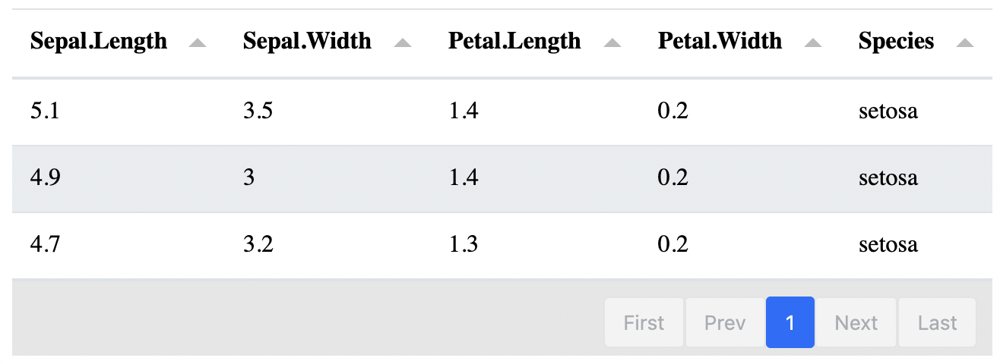
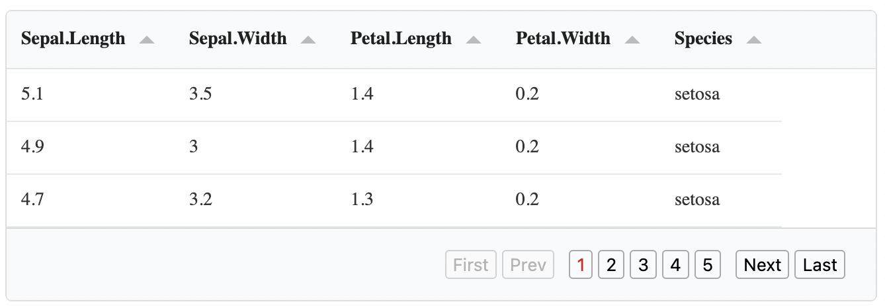
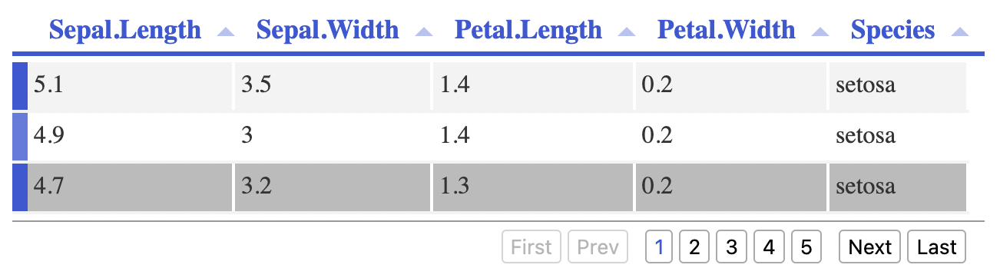
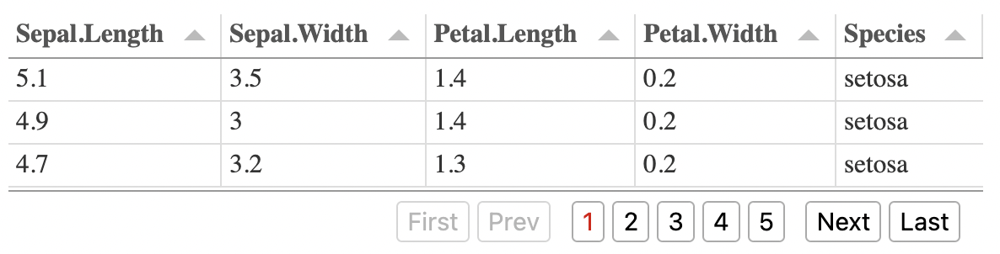
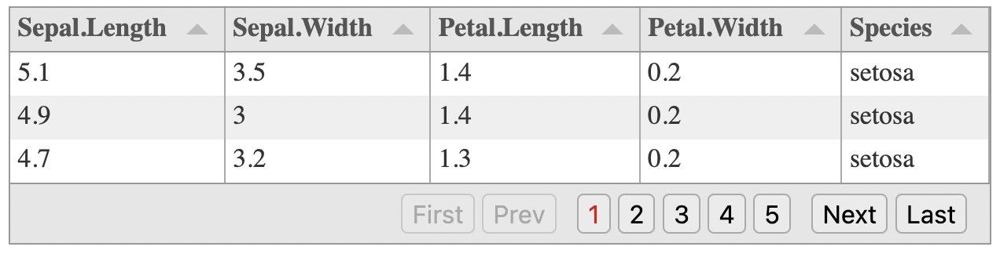

library(tinytable)
dat <- head(iris)
tt(dat) |> print("tabulator")Interactive tables
Experimental Feature
The Tabulator.js integration is experimental and the API may change in future versions. Please report any issues on GitHub.
The tinytable package supports creating interactive tables using the Tabulator.js library. Tabulator is a powerful JavaScript library that provides features like
- Sorting
- Filtering
- Pagination
- Themes
- Data export
- Real-time data editing in the browser
- Accessibility features (ARIA compliant)
Drawing, printing, and saving
To create an interactive table, use output = "tabulator" when printing your table:
To save the table to file, we can use the save_tt() function. One issue to consider, however, is that tinytable supports two types of HTML output: tabulator and bootstrap. To select the default HTML engine, users can call the theme_html() function:
tt(dat) |>
theme_html(engine = "tabulator") |>
save_tt("/path/to/your/file.html")In notebooks like Quarto or R markdown, tinytable will automatically create an HTML when appropriate. Whenn the tinytable_html_engine option is set to "tabulator", the table will be rendered using Tabulator.js.
dat <- data.frame(
city = c("Montréal", "Toronto", "Vancouver"),
salary = c(14002.22, 201399.11, 80188.38),
random = c(1.43402, 201.399, 0.134588),
date = as.Date(sample(1:1000, 3), origin = "1970-01-01"),
best = c(TRUE, FALSE, FALSE)
)
tt(dat)| city | salary | random | date | best |
|---|---|---|---|---|
| Montréal | 14002.22 | 1.434020 | 1970-07-27 | TRUE |
| Toronto | 201399.11 | 201.399000 | 1971-03-22 | FALSE |
| Vancouver | 80188.38 | 0.134588 | 1972-01-27 | FALSE |
Pagination and filtering
tinytable includes a built-in theme to add pagination, sorting, and filtering capabilities to a Tabulator table. This is particularly useful for large datasets.
To apply a theme, call the theme_html() function. See ?theme_html for a list of arguments that can be used to customize the number of pagination rows, behaviour of the search bar, and various other elements. Below, we supply a vector to control both the number of rows per page and the options available in the drop down menu that controls pagination.
We also set search=TRUE to include a filtering box. Try typing the letters “vir” in the search box to filter the iris dataset and find the Virginica flowers.
tt(iris) |> theme_html(
tabulator_pagination = c(5, 10, 50),
tabulator_search = "bottom")Format
Formatting numeric and date columns in Tabulator tables requires us to use the Javascript functionality rather than tinytable’s internals, if we want to preserve functionality like sorting.
In particular, for numeric values, format_tt() is always set to num_fmt="decimal".
tt(dat) |>
format_tt(j = "salary", digits = 2, num_mark_big = ",") |>
format_tt(j = "random", digits = 4)| city | salary | random | date | best |
|---|---|---|---|---|
| Montréal | 14,002 | 1.434 | 1970-07-27 | TRUE |
| Toronto | 201,399 | 201.399 | 1971-03-22 | FALSE |
| Vancouver | 80,188 | 0.1346 | 1972-01-27 | FALSE |
For dates, tabulator uses Luxon date format tokens, not R’s strptime format. Common patterns include:
tt(dat) |> format_tt(j = "date", date = "M/d/yyyy")| city | salary | random | date | best |
|---|---|---|---|---|
| Montréal | 14002.22 | 1.434020 | M/d/yyyy | TRUE |
| Toronto | 201399.11 | 201.399000 | M/d/yyyy | FALSE |
| Vancouver | 80188.38 | 0.134588 | M/d/yyyy | FALSE |
Here is a table with some common Luxon date formats and their output examples:
| Luxon Format | Output Example | Description |
|---|---|---|
| M/d/yyyy | 1/15/2020 | US short format |
| MM/dd/yyyy | 01/15/2020 | US padded format |
| d/M/yyyy | 15/1/2020 | European short format |
| dd/MM/yyyy | 15/01/2020 | European padded format |
| yyyy-MM-dd | 2020-01-15 | ISO format |
| MMM d, yyyy | Jan 15, 2020 | Long month name |
Style
Support for style_tt() is very limited in interactive tables. For now, only the align and alignv arguments of that function are supported.
tt(dat) |> style_tt(align = "r")| city | salary | random | date | best |
|---|---|---|---|---|
| Montréal | 14002.22 | 1.434020 | 1970-07-27 | TRUE |
| Toronto | 201399.11 | 201.399000 | 1971-03-22 | FALSE |
| Vancouver | 80188.38 | 0.134588 | 1972-01-27 | FALSE |
Style sheets
Tabulator ships with multiple complete CSS style sheets. The default in tinytable is Bootstrap 5, but you can customize the appearance using the theme_html() function (when available). Alternatives include "default", "simple", "midnight", "modern", "site", "site_dark", "bootstrap3", "bootstrap4", "bootstrap5", "semanticui", "bulma", and "materialize".
The syntax looks like this:
tt(iris) |> theme_html(tabulator_stylesheet = "semanticui")
Warning
To use a theme, the HTML file must load a style sheet globally in the document. Unfortunately, this means that tinytable cannot apply a Tabulator style sheet to a single table in documents with multiple tables. The style that applies is always the last one loaded in the document.
Here are some screenshots of different stylesheets.







CSS
For more advanced styling, you can add custom CSS rules using the tabulator_css_rule argument in theme_html(). The CSS rule must include at least one $TINYTABLE_ID placeholder, which gets replaced with the unique table identifier to ensure styles only apply to that specific table.
css_rule <- "
$TINYTABLE_ID .tabulator-header .tabulator-col {
background-color: black;
color: white;
}
"
tt(dat) |> theme_html(tabulator_css_rule = css_rule)Options and columns
The theme_html() function accepts tabulator_options and tabulator_columns arguments for advanced customization of Tabulator tables.
The options argument allows you to override any default Tabulator configuration. The columns argument lets you completely customize column definitions, including formatters, styling, and behavior.
In this example, we redefine how columns are formatted.
dat <- data.frame(
city = c("Toronto", "Montreal", "Vancouver"),
salary = c(75000, 68000, 82000),
best = c(FALSE, TRUE, FALSE)
)
custom_columns <- '
[
{
"title": "City",
"field": "city"
},
{
"title": "Best city",
"field": "best",
"formatter": "tickCross"
},
{
"title": "Salary",
"field": "salary",
"formatter": "money",
"formatterParams": {"precision": 0, "symbol": "$"}
},
]'
tt(dat) |> theme_html(tabulator_columns = custom_columns)And now we change more options, such as the layout and height of the table:
opts <- "
layout: 'fitColumns',
height: '200px'
"
tt(dat) |> theme_html(tabulator_options = opts)